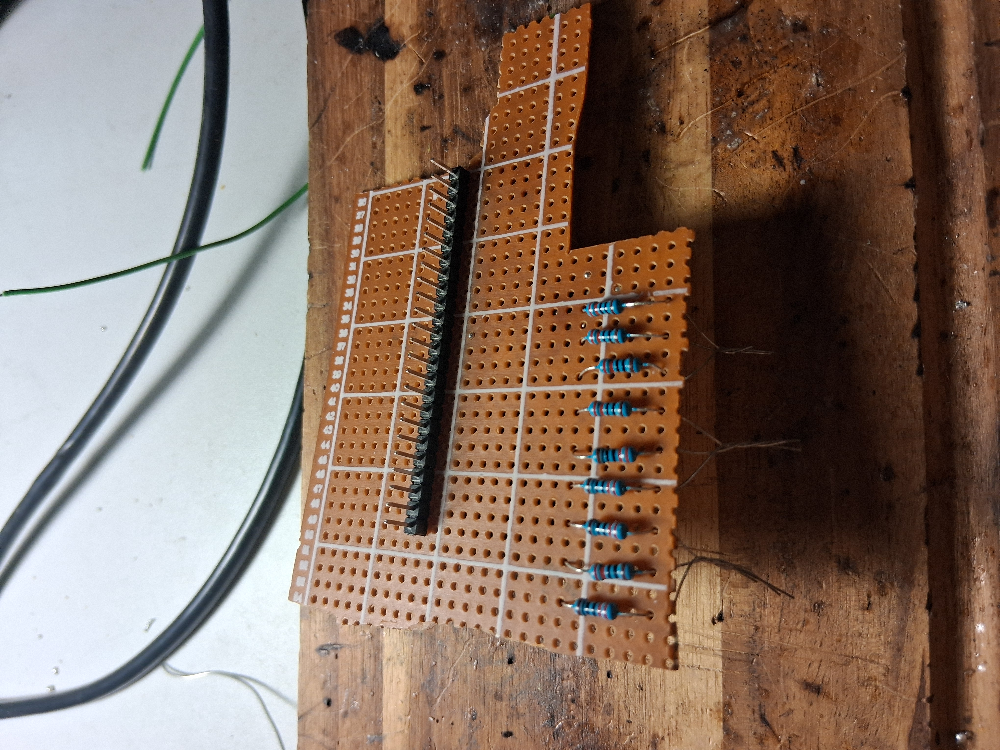
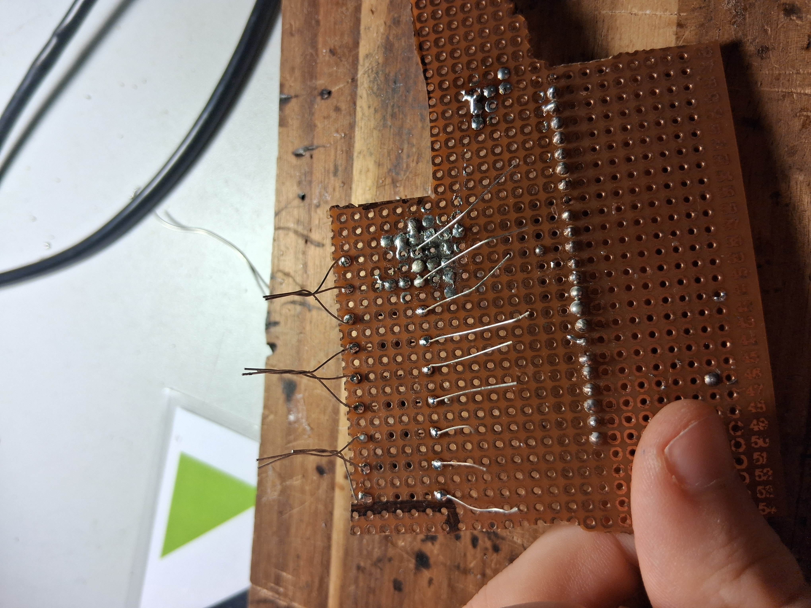
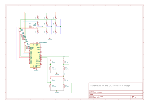
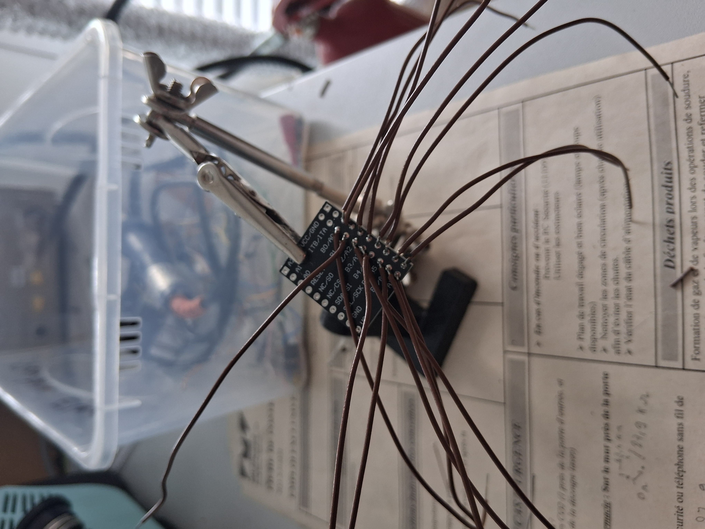
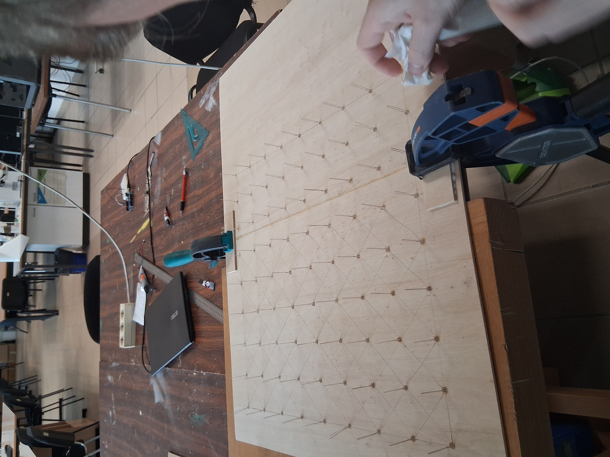
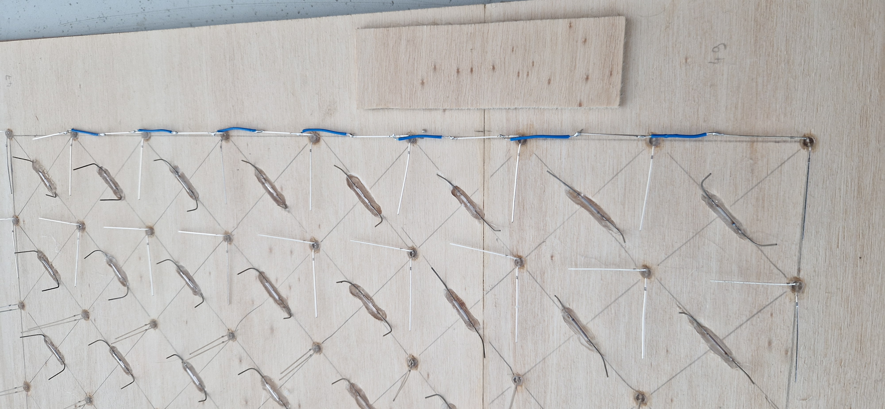
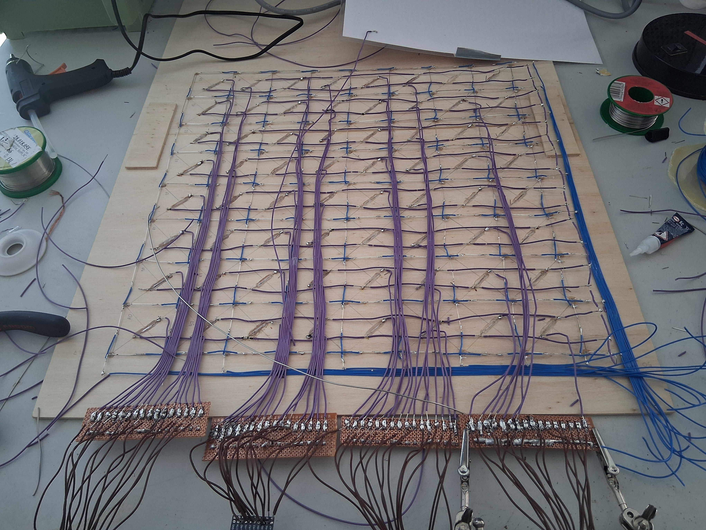

Physical Chess‑Playing Robot
Vision detects human moves • Our custom engine thinks • A robot arm moves the pieces. Built for a smooth, reliable over‑the‑board experience.

1. Chess Engine Architecture (0x88)
A small, readable engine built on the 0x88 board model: compact indexing, fast bounds checks, simple move generation, and a reversible state with perft validation.
0x88 Board Model
For fast, simple move generation I use the classic 0x88 board representation. The idea: store the board in a 128‑element array (8 ranks × 16 files). Playable squares are indices where (sq & 0x88) == 0. Any step that crosses the board boundary flips bit 0x88, so out‑of‑bounds is a single, branch‑cheap check.
Indexing & Coordinates
rank = sq >> 4,file = sq & 0x0F(0‑based).- Square index from (file, rank):
sq = (rank << 4) | file. - Algebraic, e.g.,
e2→file=4,rank=1→sq = 0x14(20).
// Directions (delta in 0x88 space)
const int KNIGHT[8] = {-33,-31,-18,-14,14,18,31,33};
const int KING[8] = {-17,-16,-15,-1,1,15,16,17};
const int BISHOP[4] = {-17,-15,15,17};
const int ROOK[4] = {-16,-1,1,16};
inline bool on_board(int sq){ return (sq & 0x88) == 0; }
// Map file/rank to 0x88 square
inline int sq88(int file, int rank){ return (rank << 4) | file; }
// Example: sliding moves (rook/bishop/queen)
void gen_slides(int from, const int* DIRS, int nDirs){
for(int d=0; dWhy 0x88 (vs. Bitboards)?
- Fast bounds check:
(sq & 0x88)replaces file/rank comparisons. - Compact move deltas: add direction constants; no tables per square needed.
- Clean encoding: algebraic ↔ 0x88 via bit ops; easy mailbox for debugging.
Bitboards are faster for bulk operations, but 0x88 is excellent for a small, readable engine that must integrate cleanly with vision/game state.
Engine Architecture (MVP)
- State: mailbox[128] + side, castling rights, ep square, halfmove clock.
- Move gen: pseudo‑legal via 0x88 deltas → legality (in‑check) filter.
- Make/Unmake: incremental update with reversible stack (captures, ep, promotions).
- Validation: perft sanity tests (startpos, ep/castling cases) to lock correctness.
- O(1) bounds check via
sq & 0x88(no file/rank branches). - Compact deltas for sliders/knights/kings; minimal tables.
- Reversible make/unmake stack for fast search/backtracking.
- Clean algebraic ↔ 0x88 mapping; easy mailbox debugging.
- Perft‑based validation to lock rules and edge cases early.
Figure insight A standard board is indexed with 0x88: a1 = 0x00, e2 = 0x14, h8 = 0x77. Any move stepping past file 7 sets the 0x88 bit, giving an O(1) bounds check and simple directional stepping.
2. Vision System & Board Tracking
A calibrated overhead camera watches the 64 squares, corrects lens distortion, and streams moves into the engine within 120 ms of the piece settling.
Camera Rig & Calibration
The camera sits 700 mm above the board on a lightweight aluminum frame. A one-time OpenCV calibration measures intrinsic parameters, while fiducial ArUco tags at the board corners provide a fast per-session homography that keeps square projections aligned even if the tripod shifts.
- 8×8 board cropped in software with a 4-pixel safety margin to avoid frame edges.
- Adaptive histogram equalization stabilizes lighting; a constant-fill LED ring minimizes specular glare.
- Checkerboard calibration yields a reprojection error <0.21 px, good enough for ±1.5 mm tolerance.
Square Classification Pipeline
The pipeline watches difference images between consecutive frames, but it only considers ROIs that map to legal squares. The sequence below keeps CPU overhead low on a Raspberry Pi 4 while remaining robust to arm occlusions.
- Compute a background-stabilized diff image using running average filtering.
- Threshold by value and dilate once to catch tapered piece silhouettes.
- Mask with the square map; classify occupancy using piece color templates captured during setup.
Move Extraction & Synchronization
Each frame emits a board hash. When a piece lifts, we flag the originating square; drop detection confirms the destination. This two-phase approach removes false positives from hand shadows. The verified move is pushed over ZeroMQ to the engine, which cross-checks legality before updating the active search tree.
Current status False positives are down to <0.5% across 40 recorded games. The next milestone is onboarding piece classification with a lightweight CNN to replace template matching for better knight/bishop discrimination.
3. Electronics Prototyping (2×2 PoC)
We built a 2×2 proof-of-concept tile to validate sensing, multiplexing, and firmware timings before scaling to the full 8×8 chessboard.
2×2 Reed + LED Proof
The PoC tile uses 9 LEDs arranged in a 3×3 matrix with four reed switches underneath the playable squares. Each LED shares rows/columns via current-limited resistors so the Arduino Mega can multiplex the output without an external driver.



The reed sensors sit beneath each square with small neodymium magnets embedded in the pieces. To minimize wire count, the sensors are wired in a grid with diodes preventing ghosting, similar to a keyboard matrix.


4. Full 8×8 Board Architecture
The production board stitches eight PoC tiles together electrically and mechanically, with redundancy so the robot never loses track midway through a game.
Electronics Topology
The 8×8 board keeps the PoC's matrix concept but scales the buses with dedicated drivers. A TLC5947 constant-current sink drives the LED columns, while two MCP23017 expanders multiplex the reed inputs back to the Arduino Mega over I2C.

- Row scanning at 2 kHz keeps LED flicker invisible while leaving MCU time for motion planning.
- Hardware RC filters plus software median filtering tame reed bounce to <5 ms.
- Modular tiles slot into a backplane so faulty reeds can be swapped without disturbing the hardwood surface.
MCP23017 Integration & Soldering
The MCP23017 I/O expanders serve as the bridge between the reed sensor matrix and the Arduino Mega. Each expander provides 16 GPIO pins, allowing us to read the state of multiple reed switches simultaneously while keeping the main controller's pin count manageable.

The soldering process required careful attention to avoid bridges between adjacent pins. Each MCP23017 is configured with a unique I2C address via hardware jumpers, enabling multiple expanders to coexist on the same bus. Pull-up resistors (4.7 kΩ) on the SDA and SCL lines ensure clean signal transitions at 400 kHz Fast Mode.
Board Fabrication & LED Assembly
The physical chessboard consists of two laser-cut MDF plates: a top layer with 64 precision-cut square recesses for the LEDs, and a bottom layer housing the electronics. The laser cutter's 0.1 mm tolerance ensures that LED diffusers sit flush with the playing surface.

Each LED is soldered to a flexible PCB strip that runs beneath the board. The strips connect to a central distribution bus, minimizing wire clutter while maintaining modularity. Thermal adhesive secures the LEDs in place, preventing movement during gameplay while allowing heat dissipation.
Reed Sensor Installation
The reed switches occupy precision-milled pockets directly beneath each square, aligned with the center of the playing area. These pockets were carved using a Dremel rotary tool with a 6 mm end mill, ensuring consistent depth (4 mm) for reliable magnetic triggering.

The reed switches are wired in a matrix configuration with 1N4148 signal diodes in series to prevent current backflow. This topology reduces the wire count from 128 (individual wiring) to just 16 (8 rows + 8 columns), dramatically simplifying the backplane routing.
Chess Piece Modification
To enable reed switch detection, each chess piece required embedding a 5×2 mm neodymium magnet in its base. A precision drilling jig ensured consistent magnet depth (3 mm from the bottom) across all 32 pieces.
After drilling, each magnet was secured with epoxy resin and oriented to ensure consistent polarity across all pieces. This uniformity guarantees that any piece activates any reed switch with the same 2–3 mm airgap tolerance.
LED Illumination System
With all 64 LEDs wired and the control circuitry connected, the first full-board illumination test validated the multiplexing firmware and power distribution. The system can now highlight legal moves, indicate check/checkmate, and provide visual feedback for piece placement.
The LED driver firmware uses pulse-width modulation (PWM) to achieve 256 brightness levels per color channel. A gamma correction lookup table compensates for human perception, ensuring that "50% brightness" appears visually halfway between off and full intensity.
Backplane Wiring & Final Assembly
The underside of the chessboard houses all power distribution, I2C buses, and the resistor network for LED current limiting. Point-to-point wiring was used to connect the MCP23017 expanders to the reed matrix, while the LED strips connect via JST-PH connectors for easy maintenance.

Cable management was critical to prevent interference with the gantry's travel envelope. All wiring bundles are routed through edge channels and secured with adhesive-backed cable clips. A single DB-25 connector on the board's edge carries power, I2C, and PWM signals to the external controller.
Mechanical Integration
The electronics tile sandwiches between a laser-cut MDF carrier and the tournament-grade wooden board. Ribbon cables exit through a recessed channel, leaving the play surface flush while protecting wiring from the gantry's travel.
- Neodymium magnets in each piece align with reeds; a foam spacer keeps switch travel consistent.
- Edge LEDs create a running-light effect for captures and check warnings.
- An onboard thermistor monitors heat buildup to prevent LED dimming during long sessions.
Status update The 8×8 board is now fully assembled and operational. Initial tests show >99.5% reed detection accuracy and flicker-free LED operation. Next steps include calibrating the vision system with the physical board and integrating the chess engine for autonomous play.
5. Mechanical Platform & Manipulator
A belt-driven XY gantry with a lightweight Z elevator delivers ±1 mm repeatability while staying gentle on the pieces.
Architecture Decision
We compared two topologies: a SCARA arm and a coreXY gantry. The gantry won due to its constant tool orientation, easier calibration with the vision system, and compact footprint that fits inside a standard tournament board frame.
- CoreXY kinematics with GT2 belts and 16-tooth pulleys deliver 40 mm/s travel for fast captures.
- Z axis uses a lead screw with a magnetic nozzle that grips pieces via embedded magnets.
- Dynamic simulation in Onshape + Motion verifies motors stay below 60% torque even during diagonal sprints.
End Effector & Compliance
The pickup tool seats a silicone pad on a compliant mount. A hall-effect sensor in the Z carriage confirms contact, allowing the controller to detect mis-grabs before dragging pieces across the board.
Safety & Serviceability
Limit switches bracket each axis, and firmware enforces soft limits derived from the same homography used by vision. The frame breaks into three aluminum extrusions so we can transport the robot through standard doorways.
Status All mechanical components are cut and dry-fit. Next we route cable carriers and add vibration dampers near the motor mounts.
6. Game AI & Search
Our in-house 0x88 engine scales from casual play to tournament strength while keeping plans explainable for the audience.
Integration Strategy
The engine runs as a C++ module embedded in the control stack, with a lightweight Python bridge that synchronizes game state across the vision and motion planners. A central arbiter maintains a PGN log, applies promotions, and supervises takebacks or illegal move recovery.
- Difficulty slider (1‒10) adjusts search depth, quiescence budget, and randomness for human-friendly play.
- Custom heuristics down-rank moves that require long robot travel paths when an equivalent alternative exists.
- All moves log to SQLite for post-game analytics: time spent, evaluation swing, and XY travel distance.
Human Interaction Layer
An onboard tablet displays the engine's principal variation, highlights the upcoming target square, and offers hints at lower levels. If the user nudges a piece incorrectly, the system flashes the destination square and waits before escalating.
Testing & Next Steps
Perft results up to depth 5 match the reference outputs (e.g., perft(5) = 4,865,609), validating legality. Next we will pit the engine against archived Lichess rapid games at multiple levels to tune evaluation weights and guarantee the robot never over-commits time in tense endgames.